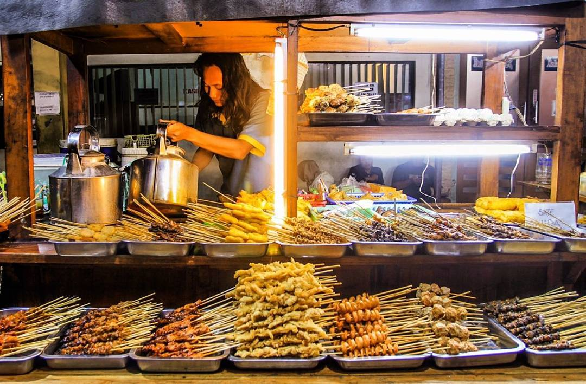

Beranda

Angkringan ialah sejenis warung yang menjual berbagai-bagai jenis makanan serta minuman dan yang biasa terdapat di setiap persimpangan jalan di Jawa Tengah dan Yogyakarta.
Nongkrong asik cemil sana cemil sini,
bayar nanti
Angkringan ialah sejenis warung yang menjual berbagai-bagai jenis makanan serta minuman dan yang biasa terdapat di setiap persimpangan jalan di Jawa Tengah dan Yogyakarta.
Jika menilik sejarah angkringan, tempat makan ini sebenarnya sudah lama ada dan menjadi budaya serta tradisi secara turun-temurun yang tak lekang oleh waktu.
Dilansir dari kompas.com, angkringan sudah ada sejak tahun 1930-an. Meski populer di Yogyarakarta, tempat makan ini sebenarnya diciptakan oleh seorang laki-laki yang bernama Eyang Karso Dikromo dari Desa Ngerangan, Klaten.
Dirinya lebih akrab dipanggil dengan nama Jukut. Awalnya, Eyang Karso Dikromo yang suka berganti-ganti profesi ini mulai tertarik dengan bisnis makanan. Ketika ia berusia 15 tahun, Eyang Karso Dikromo pergi merantau ke daerah Solo. Perantauannya ke Solo ini dikarenakan ingin merubah nasib. Ayahnya meninggal dunia sehingga ia sebagai anak tertua harus menghidupi keluarganya. Di Solo, Eyang Karso Dikromo bertemu dengan Mbah Wiryo. Keduanya pun bekerjasama untuk membuat bisnis makanan yang nantinya akan dikenal sebagai cikal bakal angkringan.
Awalnya, angkringan bukanlah seperti apa yang kita saat ini. Eyang Karso dan Mbah Wiryo membuat makanan terikan. Terikan ini adalah makanan dari Jawa Tengah yang terbuat dari bahan dasar aneka protein yang dimasak dengan kuah kental. Mereka berdua menjual makanan ini di malam hari karena pada masa itu belum banyak yang berjualan makanan saat malam hari.
Selama berjualan, Eyang Karso dan Mbah Wiryo ini perlahan menambah menu makanan dan minuman yang dijual. Keduanya mendapat ide menjajakan minuman seperti wedang jahe, teh manis panas, kopi panas, hingga aneka minuman kesehatan tradisional lainnya yang bisa dikonsumsi untuk menghangatkan tubuh di malam hari.
Berhubung ada banyak orang yang mampir untuk menikmati minuman saja tanpa ingin menyantap terikan. Eyang Karso dan Mbah Wirso pun memiliki ide untuk menyajikan menu jajanan atau camilan kampung. Misalkan saja pisang rebus, pisang goreng, singkong goreng, ubi goreng, dan lain sebagainya. Membuat hidangan istimewa kampung atau yang disingkat dengan nama HIK menjadikan angkringan mulai dikenal oleh masyarakat Jawa Tengah.
Lainnya mengenai angkringan